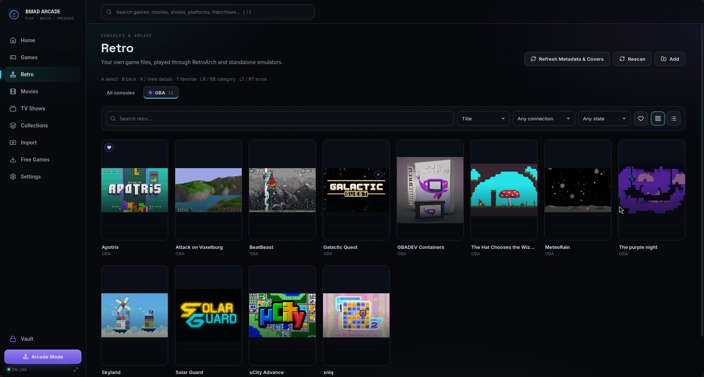
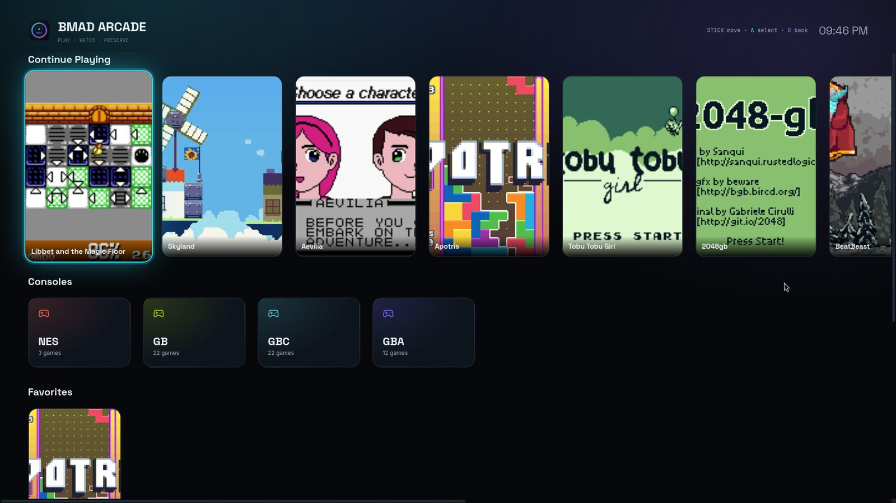

Every game you own.
One launcher that knows if it worked.
Arcade reads what your launchers already installed, shows it in one library, starts games through their own launchers and follows them until they really run.
What you get
- Your library, found automatically: Steam, Epic Games through Heroic, GOG, Lutris and programs you add; DLC listed under its game; artwork from your launchers' own caches and the stores' public image servers.
- Launches you can trust: Arcade follows the game itself and tells you why when it does not start (files moved, sign-in needed, a launcher prompt waiting for you, a game closing right after it opened, a Wine crash).
- Retro consoles through the emulators you installed (RetroArch, melonDS, PPSSPP, mGBA, PCSX2, Dolphin, DuckStation and more). BMAD Arcade includes no games or ROMs.
- Arcade Mode for full-screen, controller-first browsing.
- Free and homebrew games from open-licence sources (Homebrew Hub).
- Signed update notifications and a diagnostics file you create and choose to share. No telemetry.


Verified on real games
Real launches through Arcade's own pipeline: Bitburner, Hacknet (Steam, native); Over The Top: WWI, Raft, Bodycam, Hogwarts Legacy (Steam, Proton); Civilization VI, Grand Theft Auto V, ARK (Epic through Heroic); RetroArch (Game Boy, Game Boy Color, GBA, NES, PC Engine, PlayStation cores), melonDS, PPSSPP. Honestly reported instead of "started": Battlefield V (stops at the EA app sign-in; EA anti-cheat blocks Linux), New World (closes right after opening), The Elder Scrolls Online (starter crashes under Proton).
Honest limits
- Online-only or anti-cheat-locked games may not run on Linux.
- Physical 8BitDo button mapping is not yet verified on hardware; standard Linux gamepads (SDL) are supported.
- Linux x86_64 only.
Cross-game Fusions and Mod Lab are in development and are not distributed: they connect third-party games whose licences have not been cleared for distribution.